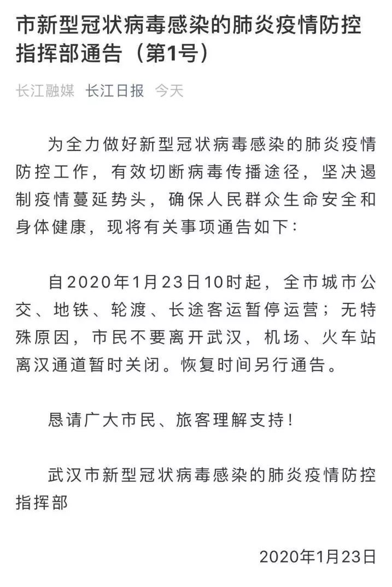
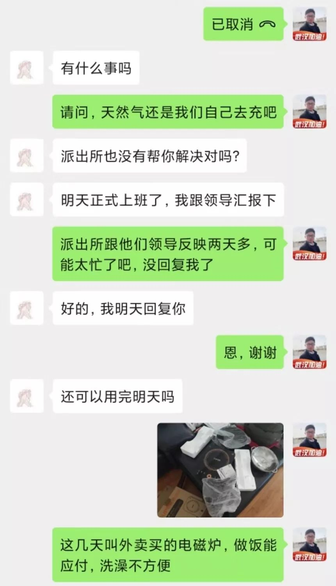
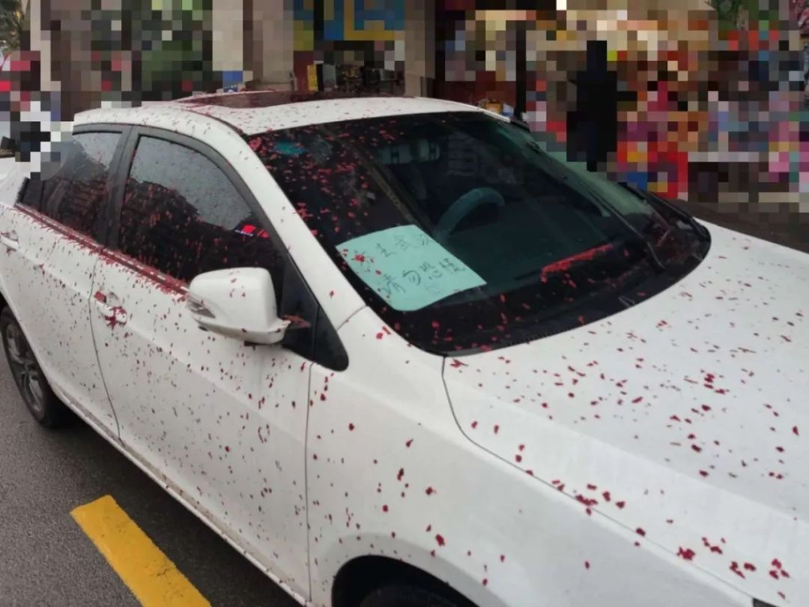
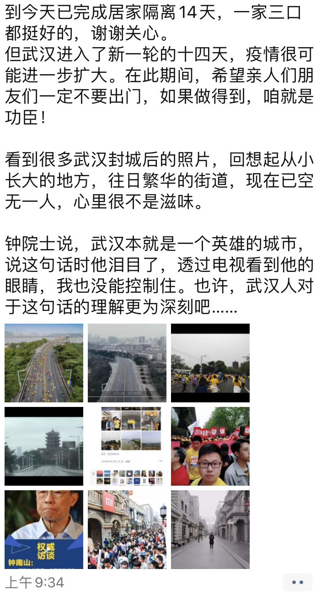

被家乡推开的人 | 武汉人③
原文链接 备份链接 关注并星标消费新声 不错过泛消费任何最新动态 疫情带来的恐慌并没有因为离汉通道的关闭而结束。这些有意或无意得以在特殊时间节点前离开武汉、回到家乡的人，一律非自愿地变成了”逃兵”和”瘟 …
大家好，我是田静。
最近朋友给我推荐了一部韩国电影，叫《流感》，是一部灾难片。
流感的起因并不罕见，讲的是一群东南亚偷渡者历经艰险来到韩国务工，却因沾染猪流感在集装箱内感染而死，只留下一个幸存者顺势逃跑。
随后，流感病毒随着幸存者的踪迹，逐渐扩散并一发不可收拾。
当病毒无法控制时，韩国政府决定对整个城市进行排查封锁，将感染者和非感染者分别放进不同隔离区，并向公众保证，非感染者48小时没有出现症状就可以离开隔离区。
影片中，女主金仁海是一名医生，也是一名单亲妈妈。为了救女儿，她瞒报女儿被感染的信息，将其偷偷带进非感染隔离区；为了寻找女儿，她拿着救所有人命的血清威胁对方……很多弹幕都指责她自私。
我看电影的时候，一直在想，我们不妨换位思考一下，如果我是她，我会放弃自己女儿吗？
大家也许会以为这是电影，虚构的，我们不需要这样的换位。
但是，这一次武汉“封城”，数百万人都面临这样的考验。现实有时比电影还残酷，每一次灾难都是对人性的考量和真实的显化。
我们一个武汉读者就给我发来留言，说自己是个“逃兵”。
1月23日凌晨3点，他突然看到一条消息，说武汉将于当天10点，关闭所有的机场、火车等离汉通道，就是后来所说的“封城”。
来不及想太多，两个小时后，他驾车“逃出”了武汉，带着自己的妻子和母亲。
他说，那是他生命中最重要的两个人，他必须要保证她们的安全。

凌晨2点看到封城消息，决定“逃离”武汉
我叫道远，生在武汉，长在武汉，武汉是我最爱的城市，没有之一。
我是学武术的，在做少儿体育培训，之前一直在武汉，而我的妻子又是长沙人，在长沙工作，两人两地分居。
去年我将工作调动到长沙，终于和妻子团聚了。但是，我的母亲却独自留在了武汉。
临近春节，我就和妻子商议，一起开车回武汉，将母亲接回长沙过春节。母亲刚开始不愿意，说她可以一个人过，让我们不要回去了。
我的父亲已经去世，如果我们不回，就剩下母亲一个人孤零零的过年，我怎么忍心？所以，我们决定一起回去接妈妈来长沙过春节。
我们20号中午开车从长沙出发，晚上到的武汉，到了后才发现朋友圈炸锅了，都在谈论疫情的事情，因为那天钟院士公开说了确定人传人。
但那时候我也没有特别紧张，我们回去时间短，根本来不及走亲访友。
我们本来有两个新春大型聚会，也都取消了，回武汉只外出见了两个人。
一个是我小时候练武术的教练，说要我给他拜年；另一个就是小时候玩得特别好的，也是练武术的队友，就去了他们两家，然后其他的地方哪都没去。
去见他们我也是戴着口罩，因为口罩很紧缺，我也是各种途径买到两盒，我平时都舍不得戴，去见他们才拿出来戴上。
剩下的时间都是在家中做母亲来长沙的工作。
好说歹说，母亲终于同意除夕之前跟我们一起回长沙过年。
我平时睡得就比较晚，记得是23号凌晨3点钟，突然看到一则公告发出来，说当天10点所有的机场、火车站等离汉通道关闭，也就是俗称的“封城”。

△ 封城通告
当时我看到这个消息，第一反应是觉得这个写的太“假”了，心里还将信将疑，觉得这么大一个城市，怎么可能封呢，再说，这个病有那么可怕吗，值得要封城？
但后来我在网上查证了半天，各个渠道的消息都印证了这件事的真实性。
这个时候我一下子就意识到疫情的严重性了，当时唯一的想法就是，我要把我的妻子和母亲带到安全的地方去。
我之前学过公文相关的东西，消息上写了停运公共交通，飞机铁路全部关闭，但是高速公路和国道却只字未提，我就知道还有走的可能。
我想消息刚刚发出不久，到了早上八九点钟，高速口肯定会有大拥堵，这时候最好能提早出发，免得夜长梦多。
我赶紧把已经睡熟的妻子喊了起来，我跟她说了我的判断，还有疫情的严重性。妻子当即就和我达成了一致，开始起床收拾东西。
但是，怎么说服我母亲，让她同意现在就跟我们走？这是个麻烦事。
母亲耍赖不走，撂下狠话强硬带离
我母亲已经60多岁了，观念比较守旧，这次她本来就打算一个人在武汉过年的，能说动她和我们一起回长沙就已经挺不容易了，再让她连夜提前跟我们“出逃”，她肯定是不愿意的。
我就跟我妻子商量好，我来唱黑脸，她来唱白脸，争取早点和我母亲达成一致。
我们把她叫醒之后，我先是跟她讲了这个封城的消息，疫情的严重性，然后告诉她我们决定连夜上高速回长沙。
果不其然，母亲一点也理解不了我这个决定。
首先是她连跟我们一起去长沙都不太愿意，更不用说连夜走了；再一个，她当时还根本没有意识到这个疫情有多严重，觉得还没什么好担心的。
母亲就像一个撒泼的小孩一样，躺在床上不起来，嘴里还喊着“哎呀我年纪大啦，你这会给我拉起来，我要着凉啦”之类的话。
不论我怎么劝也不听，跟她说长沙有很多好吃的，她也一点不动心。
我看利诱不行就只能威逼了，必须得强硬一点，我也不跟她讲道理了，就说“今天你走也得走，不走也得走！而且你不走我们俩也不会走！”
我撂几句狠话，转身就出屋收拾东西，让我老婆在里面当白脸劝她，过一会我就再进去逼她。
就这么一来一回的，劝说她劝了一个多小时，她终于心不甘情不愿地起来了。
担心母亲反悔，来不及仔细收拾行李，匆匆忙忙就出门了，当我们真正开车出发的时候，已经凌晨五点了。
在车上我妈一直冷着个脸，一句话都不跟我说，甚至我们到长沙之后，一两天她都不太待见我。
我妈吃了一辈子苦，含辛茹苦把我养大，我无论如何都要把她带到更安全的地方。再说我妻子，她一个长沙人，因为跟我回趟武汉接母亲，要是有个三长两短，我怎么和她家人交代。
说实话，那时候，我并不能保证自己或者母亲是否被传染。反正能把我生命中最重要的两个人安全带出来，我一点不后悔。
和武汉亲友告别，希望大家能走都走
我出发之前，给我在武汉亲戚好友都发了信息，我觉得不告而别不太好。
所以我提前告诉他们，事态已经发展到了什么地步，我觉得我必须得走了，不能留下来陪大家了。
群发了大概几十人吧，我当时也建议大家，高速路还没封，如果有地方去的就提前走吧，谁都不知道封城以后会怎么样，因为这是从未有过的历史。

△ 我在劝说我舅舅
后来我得知，有两家亲戚在第二天也从武汉“逃”了出来。
我们凌晨五点出发，那时候车流量也没有太大，我们一路没有休息，大概10点左右就已经到了长沙，顺利回到了我们自己住的小区。
当天下午2点，武汉的高速通道也都关闭了，回头想想真是亡命奔逃。
我现在听闻有一些武汉人，感染了疾病之后因为没有床位，所以逃到外面来，心里也挺不是滋味。
因为我也曾在“风暴中心”，我理解他们那种感受。那真的是“奔命”，就是为了自己的命而奔逃，每个人都有求生欲。
但也有反向操作的，比如我哥在知道疫情之后反而想回武汉。我说你回去干嘛？他说怕感染肺炎，感觉武汉的医疗条件好。
我就跟他说，如果你没感染，你在家里呆着，全国哪里都安全。武汉医疗条件好，但是现在这个情况人均医疗条件足吗？现在在其他地方你如果病了，起码还有个床睡一睡，能把你命护住。
我把这种迷惑行为跟我朋友说了，我朋友说你就不要劝他了，你就自己把自己管好就完了。
可我还是会习惯性的，往亲戚朋友的群聊里转发一些疫情信息，我感觉这个时候，“恐慌”反而是件好事，能让人留在家里。
但其实看多了也就疲劳了，然后就免疫这些信息了，比如说今天回暖出太阳了，我家小区又有很多人在外面打羽毛球。
希望大家真的不要松懈，疫情还远远没有过去。我逃之前也不知道这个病毒这么厉害，后来知道了，也有些担心自己会不会在潜伏期。
但理性分析来看，长沙这边的病例少，而且这个病死亡率不高，就是传染快。我首先把自己隔离好不传染别人。
如果我们三个真的谁确诊了，这边的人均医疗资源肯定要好一些，那我们可以得到有效的救治啊，对不对？这一点的话，我觉得这个决定不后悔。
后来武汉市长发言说有500万人春节前离开武汉，网上出现了很多对武汉人不友好的声音。
但如果再给我一次机会，我还是会做同样的选择。我只不过是把母亲和妻子带到了安全的地方，而且我们一到长沙之后就开始自我隔离。

△ 自我隔离期间的朋友圈
平时我们也不下楼，家里吃饭上网都不用发愁，唯一需要的就是买点蔬菜，我都是用超市的外送软件解决。
说我们是疫区的逃兵没错，但是我们出来并没有祸害其他人，就连我的天然气断了5天，我都没有出门去缴费。
说起这个事，我也有点不高兴，一边让武汉回来的人自我隔离，另一边当我遇到了问题，却没有相关人员来帮我解决。

严格自我隔离，断了煤气也不敢出门缴费
记得25号早上，电信就已经打电话给我妈了，因为我妈的手机号是武汉的，他们从基站追踪了这个号码。
然后我们家进行了一系列的登记报备之后，那边的工作人员说，有什么问题可以随时联系他们来解决。
那时我刚好发现天然气用完了，就问他我想给天然气缴费怎么办，可以找什么人来帮我们吗？
对方给了我一个物业的电话，说让我联系自己小区的物业来解决这件事。
我打给了物业之后，知道我是武汉来的，又是进行了一系列的报备，包括让我每天测量体温反馈给他们。
但是，当我说家里没有天然气，又不能网上交，大过年的也得炒菜做饭呀。他想了想，说让我去联系派出所。

△ 最后这个物业的人让我联系派出所
于是我又联系了当地派出所，派出所让我联系负责我们小区的民警，我给民警打过电话之后，他说好，过后会再联系我帮我解决。
等来等去没消息，我只好自己先网购了一个电磁炉来对付。
但这个问题总要解决，我又等了几天，也没有人回复我，我给民警又发了信息，也没收到任何回音。

△ 派出所民警的回复
政府部门这种打太极的做法，让我有点生气，但是也能理解，毕竟我们是从“疫区”过来的，一般人也不敢上门来拿天然气卡。
没有燃气用，一直用电磁炉对付，年夜饭也没吃，大家都被弄得很郁闷，也没心情弄。
我妈本来就不高兴，这下就更加生气了，一个劲嫌电磁炉不好使，让我直接去充上不就行了吗？
我说不行，我们现在还是自我隔离期，不能出去给别人添乱。
实际上这个真是靠自觉的，没有人能限制你出门，可我想大多数人应该是有这个自觉性的，要做文明武汉人嘛。
直到5天后，我妻子的妹妹过完春节，从乡里返城，才帮我们把天然气给充上了。
这个妹妹是个护士，初四那天接到通知，要去人最多、最危险的地方执勤，比如长沙火车站那些，在那里做体温检测。
她说全身穿着防护服，然后好几个小时都没吃没喝，确实很危险也很辛苦，比起我这个武汉“逃兵”，我真心觉的她们很了不起。

车上贴了纸条，汽车还是被鞭炮炸了
我每天在家隔离，除了上网也没事可做，看了好多网上对武汉人的抨击，过激的言论和行为让我很难受。
我的朋友也提醒我，有人恶意打砸鄂A牌照的车，让我赶紧搞个车衣罩起来。
车衣我没有现成的，就赶紧弄了张纸，写着我已经在长沙定居半年了。
当然，我也撒谎了，没有说这个车刚从武汉回来，担心说了也是增加大家的恐慌，说还不如不说。

△ 临时添上了一张纸
但是第二天下午，我要去车上拿东西，发现我的车真出事了。
车位周围和车上全是鞭炮炸过的痕迹，从痕迹上看，有人应该是直接把鞭炮放在我车顶炸的。

△ 爱车被炸
我真是委屈又无奈，要是平时肯定得找物业去理论，但是现在，我只能灰溜溜地把车停到小区偏僻的角落里了。
我们真是严格遵守在家自我隔离，我陪我妈看看电视上上网，我妻子看看书因为要工作。因为空闲时间突然多起来，平时不怎么联系的朋友又联系上了，他们也都很关心我的近况。
我心里清楚，现在没人敢见我，但是这些问候还是很温暖人心的。
刚开始网上对武汉人的声音特别不友好，我心里看了很难受。我也试着在朋友圈呼吁要理性对待外地武汉人，但收效甚微。
后来在媒体的呼吁下，现在网上理性的声音多了很多，特别是很多地方都积极妥善安置滞留的武汉人，我看了也很感动。
现在什么都想不了，就希望这个疫情快快过去。因为疫情，我的培训学校开不了，我妻子的单位也延期开工。
从23号到现在，已经十多天过去，我们一家都没有任何异常反应，我武汉的亲戚朋友也没有被确诊或者疑似的，这让我松了一口气。
我再熬几天，一切都会好的吧。

△ 居家隔离14天，并无肺炎症状
田静后记：
现在看来，道远一家三口是幸运的，很多和他一样选择悄悄“逃离”武汉的，其中有人已经出现发热症状，病毒跟随他们的足迹而向外传播。
这不仅给更多无辜群众带来麻烦，有的甚至还将面临法律制裁。
一武汉父母强行带疑似感染新型肺炎的孩子离境，被马来西亚警方逮捕；四川张某从湖北务工返村后，拒绝“居家隔离”14天的劝告，而被警方带离强制隔离……
在这场“战疫”中，法律有明确规定，如果明知自身已感染 “新型冠状病毒”而故意传播，危害公共安全，即使没有造成严重后果，仍构成以危险方法危害公共安全罪，处三年以上十年以下有期徒刑。
如果市民实际上携带病原，处于潜伏期，误以为自己没有感染该病毒，并且在主观上没有故意传播传染病的，但不服从政府管制，则会构成过失以危险方法危害公共安全罪，最高可处七年以下有期徒刑。
尽管如此，如果时间能够倒回，给每一个武汉人，重新选择一次，会有不一样的结果？
我想结果不会改变，甚至有更多人会选择想要离开。
危机时刻不要考验人性，也不要站在自己道德的至高点去评价别人，更不能够去绑架，因为我们不是他们。有时候道德的那个至高点，换做我们也不一定能爬的上去。
在灾难面前，有人选择逆流而上，有人选择苟且偷生。也正是因为这样才显得英雄的悲壮，平凡人的无助，甚至小人的可耻。
时至今日，只希望逆行者无悔，偷生者无恶。那才是人间最好时。
为中国女性安全 提供专业解决方案
▬ ▬ ▬ ▬ ▬ ▬ ● ▬ ▬ ▬ ▬ ▬ ▬
女 孩 别 怕
未经授权 禁止转载
欢迎分享到朋友圈
原文链接 备份链接 关注并星标消费新声 不错过泛消费任何最新动态 疫情带来的恐慌并没有因为离汉通道的关闭而结束。这些有意或无意得以在特殊时间节点前离开武汉、回到家乡的人，一律非自愿地变成了”逃兵”和”瘟 …
原文链接 备份链接 澎湃新闻记者 范佳来 2020-02-01 10:06 来源：澎湃新闻 字号 2月1日，阴雨连日，武汉迎来了久违的阳光，但疫情尚未因此得到缓解。多位接受采访的武汉诗人告诉澎湃新闻记者，他们感到深深的无力。现在的武汉，缺 …
原文链接 备份链接 据相关数据统计，春节前，有近500万人离开武汉，他们中有近30%的人离开湖北，他们或出差、或进行计划许久的旅行，或回家过年，但伴随着疫情的加剧，他们成了一群「不被欢迎的人」。 一位武汉的小学老师已经连续三年去厦门过年， …
原文链接 备份链接 这是一场无法预知开始、但也许可以看到结局的抗击疫情特殊战役，它不仅仅是疫情爆发地汉口的战役，更是武汉及周边，湖北、乃至全国的战役 文 |《财经》记者 房宫一柳 黎诗韵 管艺雯 宋玮 高洪浩 余洋洋 陈晶 实习生 张凡 …
原文链接 备份链接 我有点后悔离开武汉了。自从回到乡下，武汉的肺炎疫情很是让人揪心，过年也变得寡然无味，大家都心神不宁的。早知如此，还不如就留在武汉过年，还安心一些。 封城那天，网络上不断有人炫耀“逃离”武汉，我就觉得好笑。疫情面前，有人 …